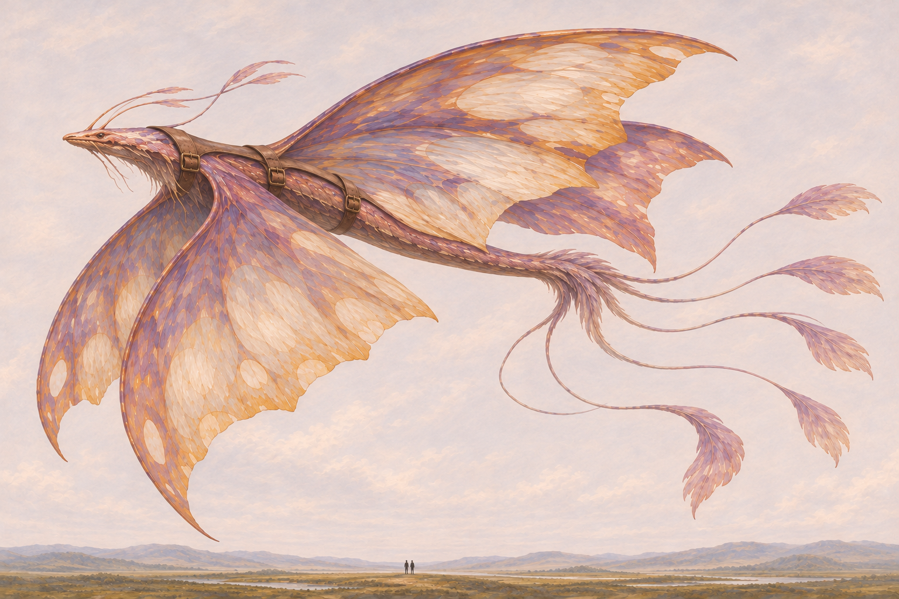

Veilwing — final art
The final card painting and exact approved creature reference. The anatomy diagrams remain supporting aids.
Anatomy notes · Prompts and approval record
Final card art
S13-06-L1 · Final

Approved creature reference
VA4 · Exact reference

Top projection
VA6 · Supporting study